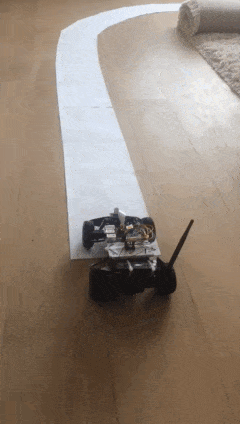

Mike Garmulewicz
--------------------------------------------------
How to build small self driving car?
My recent side project is a small self driving car



How does it work
A nice scheme how it workxx
Starting with the first car
Started the story with learning a bit about electronics.
blinkenlights.jpg [oscillator implementation]
Read
Make: electronics
Bought a little green car, disassembled it completely.
I didn't understand too much about about how this stuff works, just bought
the cheapest one in Action.nl.
IMG_3568.jpg [picture of little green car]
This one was also contender, but too expensive ;)
IMG_0450.jpg [ Mercedes]
Make a photo of how it looks before desoldering anything.
IMG_3570.jpg [ Picture of PCB details]
Actually construction of it is really simple, there are two wires
going to battery, and two wires going to each engine front and back.
So I have figured, if I can control when electricty goes to the motor, I
can control motor. But it is not so easy, raspi can't run such
high power through pins. If you connect motor, it will damage raspi
You can buy motor controller for raspi
or be thrifty, and implement own.
Followed this tutorial:
https://business.tutsplus.com/tutorials/controlling-dc-motors-using-python-with-a-raspberry-pi--cms-20051
and it worked! Actually it contains an error.
Read the chip factsheet, fixed the bug.
Remote control
first tried TCP
the tried UDP
### Camera
### Second car
When I learned that the first one is too weak to transport all this weight,
bought second better one.
I learned at this point that some of more advanced RC cars use more
refined servo-style motor at front. These use PWM pulse width modulation
and need a special hardware controller.
Luckily this one was not that expensive, 20-30 euro so still has simplified
steering with standard(what's the posh word?) engine.
Remote control was too slow, fixed by buying faster intercae
### Machine learning
Nvidia paper, Udacity
[IMG_4038.m4v]
### Lessons
* be patient
* need a lot of money